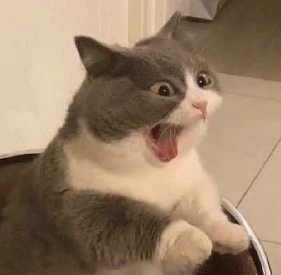
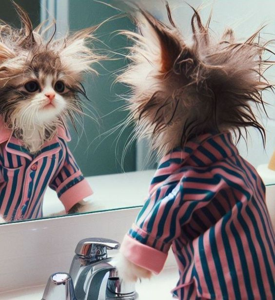

Inspección de Comida
Si tu gato está revisando constantemente su plato de comida, es posible que esté esperando que se le sirva más comida..
Leer Más
¿Cómo saber si tu gato está estresado?
Aquí van algunos ejemplos y consejos para detectar el estrés en tu gato.
Leer MásComportamiento de Rascado:
Si tu gato empieza a rascar la puerta de la cocina o del área donde normalmente se alimenta, es una señal clara de que podría tener hambre.
Leer Más

Llamadas Constantes?
Los maullidos persistentes o más agudos de lo habitual pueden indicar que tu gato está tratando de comunicarte que tiene hambre..
Leer MásÚltimos Artículos

Cambios en el Comportamiento
Si tu gato comienza a esconderse más de lo habitual o evita el contacto contigo, podría estar estresado. El estrés puede provocar que tu gato se vuelva más reservado o agresivo.
Leer másRascado Excesivo
El rascado excesivo o el sobreacicalamiento pueden ser signos de que tu gato está experimentando estrés
Leer más